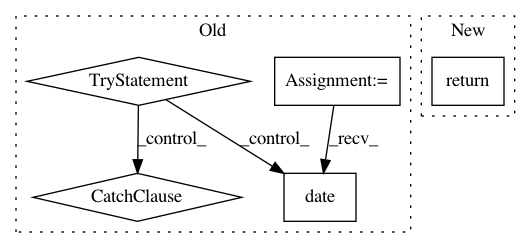

03215a5fb0a0e113a419edd410202c32136d9c64,ner_v2/detectors/temporal/date/gu/date_detection.py,DateDetector,detect_date,#DateDetector#Any#,33
Before Change
// Note: Following leaves tagged text incorrect but avoids returning invalid dates like 30th Feb
for date, original_text in zip(date_list, original_list):
try:
datetime.date(year=date["yy"], month=date["mm"], day=date["dd"])
validated_date_list.append(date)
validated_original_list.append(original_text)
except ValueError:
pass
return validated_date_list, validated_original_list
After Change
self.processed_text = self.text
self.tagged_text = self.text
return self._detect_date_from_standard_regex()
In pattern: SUPERPATTERN
Frequency: 3
Non-data size: 5
Instances
Project Name: hellohaptik/chatbot_ner
Commit Name: 03215a5fb0a0e113a419edd410202c32136d9c64
Time: 2018-10-25
Author: amans.rlx@gmail.com
File Name: ner_v2/detectors/temporal/date/gu/date_detection.py
Class Name: DateDetector
Method Name: detect_date
Project Name: okfn-brasil/serenata-de-amor
Commit Name: cf66950a64bc146e4cefc40975771302a30a0cb4
Time: 2017-10-22
Author: cuducos@users.noreply.github.com
File Name: jarbas/core/fields.py
Class Name: DateField
Method Name: deserialize
Project Name: hellohaptik/chatbot_ner
Commit Name: 03215a5fb0a0e113a419edd410202c32136d9c64
Time: 2018-10-25
Author: amans.rlx@gmail.com
File Name: ner_v2/detectors/temporal/date/hi/date_detection.py
Class Name: DateDetector
Method Name: detect_date